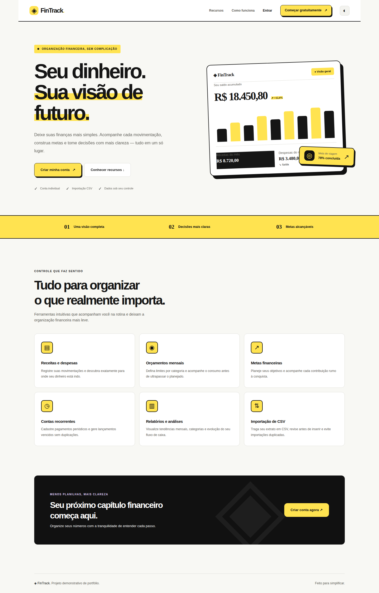

TELA 01
Landing page
Apresentação da plataforma financeira.
DesktopAcompanhe receitas, despesas, orçamentos e metas em um painel financeiro claro e objetivo.

Telas reais do projeto com dados fictícios. Alterne o tema para comparar o modo claro e o escuro e clique nas imagens para ampliar.
Esta publicação no GitHub Pages apresenta interfaces e recursos do projeto. O backend Python/FastAPI, o login e o banco de dados não funcionam nesta versão estática. Para executar a aplicação, consulte as instruções no repositório.